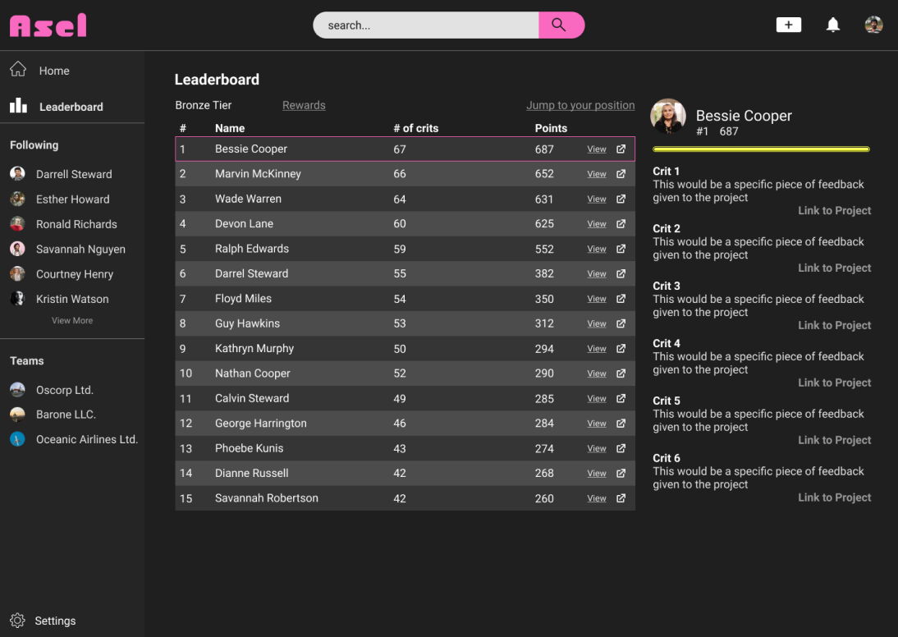
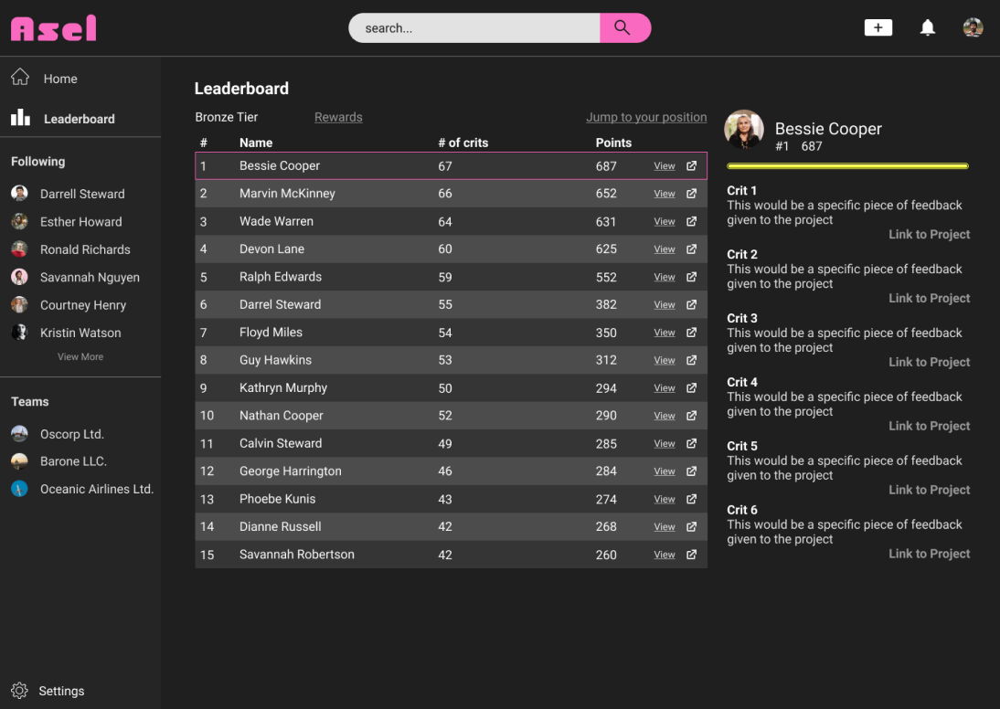

Breakdown
Problem
This project is a greenfield project for visual creators to share
feedback.
Goals included:
Making the product accessible Designing at different breakpoints
Making the product fun
Situation
I worked fully remote over
48 hours in 8 weeks. I worked solo for the last
six weeks of the project.
 -->
-->
Discovery Phase
Defining our users
Mid to High Fidelity
Final Designs
Lo-fi Iterations
Major Problems
Solution
Paper sketches
First Iteriation Ideas
Simplification
Testing Prototype
Main component group iteration
Main color scheme
Implementing gamification
Changes to Hi-Fi
Testing prototype
We developed a risk matrix to prioritize our research questions. Our
questions focused on the viability of our project. Others focused on how
people receive and give feedback, and project habits.
How many projects does an individual works on at a single time?
What kind of feedback do our users value?
Is this product something our users want?
Competitive Research
Surveys
User Interviews
Dribbble, Art Station, Behance all focus on sharing visual content with
a secondary effort in giving comments. We looked at Trello, Slack, and
Monday to check their efficacy on communication.
Our questions centered around user tech habits and feedback
interactions. We framed the questions to work in any career field to
allow a broader range of responses.
We limited our questions types to multiple-choice or scale responses
to minimize text responses. This made it easier to digest and
categorize the survey.
After sharing the survey on social media, slack and discord channels,
and friends, we received 17 responses, with 11 singing up for user
interviews.
We wanted to understand what made feedback good and bad. Our questions
dug into how feedback made people feel and what aspects made them feel
that way.
Each color represents a participant, with each takeaway on a sticky
note. We crafted an affinity map and found similarities between all
our interviewees.
An example is that people feel there's always a lack of feedback.
Our interviews were conversational, allowing us to dive deeper into
aspects of the question.
Our initial participants didn't accurately reflect our userbase. We
conducted another round of interviews to capture more visual
creatives. UX designers and artists.
The persona guided us with design decisions. It helped with the creation
of the journey map. The journey map itself wasn’t as useful since the
project was only theoretical. Our persona used aspects like common apps
to keep our design familiar with our users.
While we were figuring out our users we began to think about our
flows. How submitting a project would look is something we focused
heavily on.
We focused on ways that users could easily edit preferences while
keeping the flow simple. At this point, we wanted to keep all the
actions on one page. This helped churn ideas of how the UI could look
so we wouldn’t be going into lo-fi design blind.
In a longer timeline, I would have wanted to explore more use cases for
the project. There are 3 main users that would be interacting with the
product.
I gathered 4 designers to discuss ideas on how to incentivize
feedback. We did a brainstorming session that was pretty light
hearted. The loose environment helped cultivate out-of-the-box ideas.
Some were more feasible than others and we proceeded with dot voting.
Dot voting helped focus in on ideas that were more realistic like
offering an ad free experience in exchange for feedback. A solution we
liked was offering prizes to top-rated feedback.
Our first concept revolved around keeping the site project based. Our
users would have a general overview of their projects and could at a
glance see who contributed to what project.
We discussed about our research and felt that this concept didn’t
address enough of our users pain points. It focused heavily on the
community aspect of building a project but lacked solutions to
providing confidence in feedback.
The visual layout of this sketch was something we liked and pushed
through to our future lo-fi designs.
This concept was a direct result of our thinking. Variable circles
would represent individuals who contributed more to the project. This
idea was attempting to tackle the issue of quality of feedback. The
more an individual would contribute to a circle the larger it would
get.
We had the idea of a coursel users would interact with to navigate
between projects. This idea also had a similar visual layout with
projects and a more in-depth view shown side-to-side.
Summarizing these sketches into a concrete list of ideas was helpful
for the beginning of our lo-fi process.
The circle concept was abandoned even before we jumped into our
wireframes. We felt that this idea wouldn’t be practical for
onboarding new users. There are established methods of showing
interaction.
The horizontal and vertical layout ideas were things we explored in
our wireframes. The concept of having 2 separate ideas shown on 1
screen seemed like a good idea to limit the number of screens the user
had to navigate through.
I didn’t properly get to do research on these 2 types of users and this
project focuses heavily on project submitters. This is definitely
something to research in future iteriations.
Project Submitters
Feedback Givers
Team Builders
Based off of our research, we were concerned about the viability of
our product. Critiquing others is something that doesn’t come
naturally to people. At the same time, some people don’t even want to
be critiqued.
The problem we’ve experienced among artists is that they value
feedback from verifiable experience.
The workshop lead us towards the direction of gamification. We planned
to incentivize participation by offering rewards.
Rewards include feedback from a professional and promoted posts. These
two rewards directly address the issue of a reliable source and lack
of feedback. Smaller rewards would be given out to pull into the
gamified loop.
The thought was to distribute points for every interaction on the
site.
More points would be offered for critiques and positively received
critiques would offer even more points.
Adding a leaderboard was also discussed to cultivate competition. The
leaderboard would also determine what prizes are given out to which
individuals. Different teirs of the leaderboard determines what prizes
are rewarded. Position on the leaderboard determines if those prizes are
given.
The beginning of our ideation process we were still unclear on how we
wanted the site to look. We bounced ideas around on a zoom and created a
few paper sketches.
We separated the two feeds into separate pages which allowed us to add
more gamification elements.
The crown was an idea we had to distinguish members that frequently
gave valuable feedback.
Even with these changes we still found that the page would be
difficult to read. To help guide the user through the flow we
implemented an idea of a tutorial for the site.
We felt our product warranted a tutorial. After desiging it, we tested
it and everyone choose to skip the tutorial.
Without this testing we would have spent an inordinate amount of time
trying to create this feature no one wanted.
I asked a few other designers to help with simplifying the main
component. This image was the one that was closest to what I was
looking for.
There was a fundamental issue with the concept of trying to fit all
the information on one screen.
I wanted to explore the concept of gamification in this project. I
knew that making people leave feedback would be a challenge.
Gamification elements like the leaderboard and points system were
added to push people to leave critiques.
The reward system was also attached to the leaderboard. Each tier on
the leaderboard would unlock a specific reward that we learned people
wanted during our user interviews.
Changes from mid-fi to hi-fi included moving the title to right side
to allow for more space for the project to be seen.
I changed the search bar to match the rest of the dark aesthetic in
the design.
The side bar had a lot of iterations and experimentation with icons,
logos, buttons, scroll bars. I landed on this for the time being.
After these changes I was hitting close to the deadline. I wanted to
make sure that there were no major usability issues. I developed a
Hi-Fi prototype and looked for participants for testing.
The testing faired better than I anticipated. The home screen was
still a troubled issue with the component.
Submitting feedback is a big issue with all our participants unclear
of how they were supposed to complete the task. Watching the
participant seemed like the issue was with the split screen design.
They expected all of their actions to take place on the left side of
the page and didn’t even look at the right side. Going forward the
changes to make would be to move all the interactable elements to the
left side of the screen. There could also be a version with the
feedback form taking up the entire screen.
I was able to complete a few changes before the deadline but wasn’t
able to address every issue found during testing.
This was my first big project. There was a lot of steps that my
partner and I had taken without fully understanding the purpose behind
it.
Our research lacked focus. The implementation of the qualatative and
quanatative feedback was poor. Onboarding our users was something we
spent a lot of time and discusson on and didn’t do much to help make
that process better.
All in all, I made plenty of mistakes and I learned so much. I feel
like I can come back to this project and make it really solid. I do
think this idea is a really good one.
I dove into gamification and while the implementation of it was not
fully thought out in this project, I learned so much theory and what
challenges lie when trying to implement it.
Point distributionRewardsPoints System
5 points per critique
Profile customization
1 point per upvote on a critique
Boosted post
Feedback from a professional
Real quote from user interviewsDesign workshop to solve for incentives for feedbackSketches my partner madeFirst iteration of homepageHomepage tutorialLo-fi prototype to test tutorial and other main functionsTutorial guide for the homepageIdeating new main componentExploration of color before group iterationLeaderboard page with light search bar and updated sidebarHigh Fidelity Prototype
Key Insight
Key Insight
Our competitors
Questions
Reach and outcomes
Questions
Process
Persona
User flow
Forgotten Users
Running a design workshop
Project focused concept
Addressing the source problem
Transitioning into wireframes


Contain elements of social media
People felt there is a lack of feedback
No strong focus on incentivizing feedback
People don’t like giving feedback
Often used as a hosting platform for projects
The source of the feedback is very important
Sites focus heavily on the professional market
Artist don’t like feedback in general
“... it's like, pretty annoying when randos on twitter think they can
lecture me on art”.


 

 Risk matrix to evaluate how to move forward with our researchExample of questions in surveyAffinity map of second round of interviewsPersona of user looking for feedbackUser flow of submitting a project
Risk matrix to evaluate how to move forward with our researchExample of questions in surveyAffinity map of second round of interviewsPersona of user looking for feedbackUser flow of submitting a project


Our main objective was to have everything the user needs on the
homepage.
One side would consist of projects to review, while the other side
would be incoming feedback.
We had similar concepts with our previous discussion in mind.
The major deviation between our designs are the horizonal carosel and the vertical scrolling.
We discussed and landed on vertical scrolling. Our hope was that
users could view a substantial amount of projects in a short time. A
carosel would be more difficult to navigate between projects.
The design was too busy having 2 different views on one screen. We
found that separating these views into 2 pages cleaned up the design
and made it less intimidating.
Restrospective

Chess.com Case Study


 Risk matrix to evaluate how to move forward with our researchExample of questions in surveyAffinity map of second round of interviewsPersona of user looking for feedbackUser flow of submitting a project
Risk matrix to evaluate how to move forward with our researchExample of questions in surveyAffinity map of second round of interviewsPersona of user looking for feedbackUser flow of submitting a project